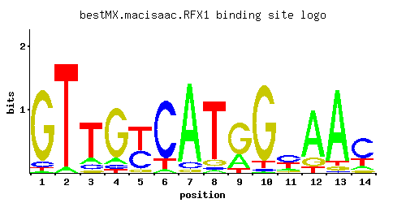

RFX1
YLR176C, CRT1
Major transcriptional repressor of DNA-damage-regulated genes, recruits repressors Tup1p and Cyc8p to their promoters; involved in DNA damage and replication checkpoint pathway; similar to a family of mammalian DNA binding RFX1-4 proteins
Best-performing DNA-binding model.

View and copy the recommended matrices ↘
A | 0.025 0.050 0.114 0.086 0.001 0.050 0.886 0.037 0.262 0.012 0.114 0.755 0.875 0.102 C | 0.074 0.001 0.108 0.063 0.414 0.810 0.075 0.037 0.001 0.026 0.459 0.001 0.025 0.634 G | 0.875 0.001 0.050 0.801 0.073 0.001 0.038 0.100 0.648 0.887 0.112 0.144 0.050 0.075 T | 0.026 0.948 0.728 0.050 0.512 0.139 0.001 0.826 0.089 0.075 0.315 0.100 0.050 0.189
A | 2 5 11 8 0 5 88 3 26 1 11 75 87 10 C | 7 0 10 6 41 81 7 3 0 2 45 0 2 63 G | 87 0 5 80 7 0 3 10 64 88 11 14 5 7 T | 2 94 72 5 51 13 0 82 8 7 31 10 5 18
A | -2.55 -1.86 -1.03 -1.31 -5.77 -1.86 1.02 -2.16 -0.20 -3.28 -1.03 0.86 1.01 -1.14 C | -0.89 -5.19 -0.51 -1.05 0.83 1.50 -0.88 -1.58 -5.19 -1.93 0.94 -5.19 -1.97 1.26 G | 1.58 -5.19 -1.28 1.49 -0.90 -5.19 -1.56 -0.59 1.28 1.59 -0.47 -0.22 -1.28 -0.88 T | -2.51 1.09 0.82 -1.86 0.47 -0.83 -5.77 0.95 -1.28 -1.45 -0.02 -1.16 -1.86 -0.53
Alternative candidate matrices 5
Historical matrix candidates from the original ScerTF database. Expand a source to inspect its original logo, scores, and matrix values.
RFX1Badis et. al.P = 0.0003128View matrix ↘
RFX1Foat et. al.P = 1View matrix ↘
RFX1Harbison et. al.P = 1.87e-16View matrix ↘
RFX1Morozov et. al.P = 9.40e-20View matrix ↘
RFX1Pachkov et alP = 3.10e-17View matrix ↘
Gene-level annotations and interactions.
Genes bound in ChIP-chip experiments 105 genes
YAL001C, YAL058W, YBR042C, YBR128C, YCL002C, YCL006C, YCL007C, YCL008C, YCL009C, YCL010C, YCR002C, YCR004C, YCR005C, YCR006C, YCR008W, YCR012W, YDL101C, YDL129W, YDL229W, YDR022C, YDR067C, YDR068W, YDR086C, YDR098C, YDR101C, YDR186C, YDR188W, YDR292C, YDR372C, YDR373W, YDR410C, YDR429C, YDR431W, YDR472W, YDR496C, YDR506C, YDR537C, YDR539W, YER022W, YER181C, YGL116W, YGR059W, YGR180C, YGR222W, YGR255C, YGR256W, YGR263C, YGR265W, YGR277C, YGR278W, YHL008C, YHR044C, YHR045W, YHR153C, YHR154W, YHR166C, YHR167W, YHR181W, YIL066C, YJL026W, YJL027C, YJL134W, YJL135W, YJL136C, YJL145W, YJR088C, YJR089W, YJR140C, YJR141W, YKL100C, YKL172W, YKR026C, YKR074W, YLR034C, YLR106C, YLR107W, YLR286C, YLR287C-A, YLR409C, YLR410W, YMR052W, YMR177W, YMR187C, YMR279C, YNL188W, YNL209W, YNL259C, YNL261W, YNL330C, YOR112W, YOR263C, YOR265W, YOR268C, YOR269W, YOR279C, YOR280C, YOR282W, YOR284W, YOR378W, YPL039W, YPL040C, YPL188W, YPL189W, YPL190C, YPL191C
Genes affected by TF deletion 84 genes
YDR372C, YHL016C, YHR146W, YKL047W, YMR192W, YOR377W, YOR379C, YDR207C, YDL129W, YEL047C, YGL012W, YOR378W, YPL016W, YBR124W, YNL143C, YDL226C, YGR180C, YGR212W, YHR208W, YML058W-A, YML089C, YMR314W, YNR026C, YPL084W, YBR129C, YLL002W, YMR102C, YOR316C, YPR015C, YDR281C, YGR183C, YLR183C, YLR155C, YLR157C, YOR075W, YIL117C, YNR066C, YJR148W, YBR166C, YGR161C, YJL088W, YLR034C, YLR099C, YLR437C, YJL026W, YIR009W, YMR291W, YPL156C, YLR345W, YMR110C, YMR140W, YIL068C, YPL189W, YGL184C, YML130C, YEL060C, YJL134W, YKL120W, YMR177W, YKL030W, YKL003C, YIL066C, YOL151W, YOL155C, YIL061C, YKR032W, YGR146C, YGR117C, YHR136C, YDR033W, YDR423C, YMR034C, YOR280C, YHR135C, YNL230C, YPL075W, YBL051C, YLR176C, YML052W, YMR276W, YLR395C, YLR177W, YMR279C, YNL324W
Genes supported by both experiments 12 genes
YDL129W, YDR372C, YGR180C, YIL066C, YJL026W, YJL134W, YLR034C, YMR177W, YMR279C, YOR280C, YOR378W, YPL189W